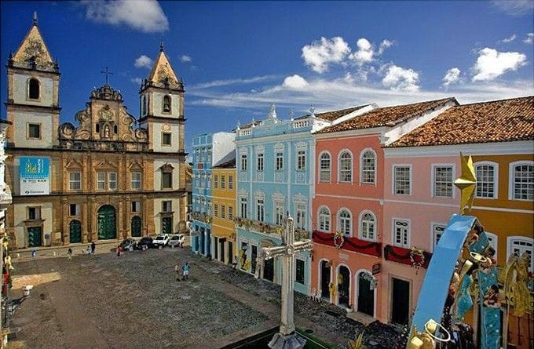
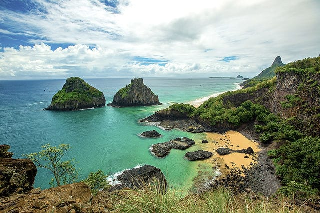
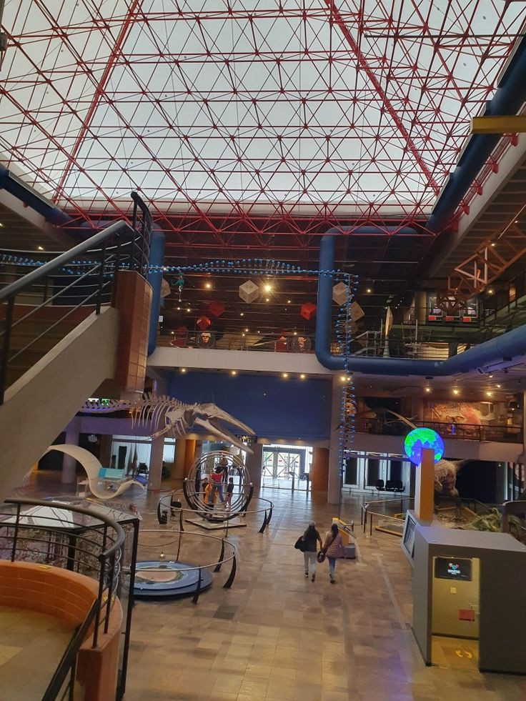

O Museu do Amanhã, localizado na Praça Mauá, é um espaço interativo e tecnológico que explora temas como sustentabilidade, convivência e o futuro da humanidade.
Suas exposições combinam ciência, arte e cultura para estimular reflexões sobre os desafios e as oportunidades dos próximos 50 anos.
O museu também promove visitas educativas, com enfoque em escolas e grupos, tornando-o ideal para passeios estudantis.
Região Sudeste

Inhotim (Brumadinho, MG)
Inhotim é um dos maiores museus de arte contemporânea ao ar livre do mundo, misturando exposições artísticas com um belíssimo jardim botânico.
O espaço oferece trilhas educativas, workshops e atividades interativas que unem arte, natureza e sustentabilidade.
É ideal para conectar os estudantes a questões ambientais e artísticas.
Região Sul

Parque Nacional do Iguaçu (Foz do Iguaçu, PR)
Famoso por abrigar as Cataratas do Iguaçu, este parque é um excelente destino para aprender sobre biodiversidade, geografia e a importância da preservação ambiental.
Os passeios incluem trilhas educativas e visitas ao Centro de Visitantes, que oferece informações sobre a fauna e flora da região.
Região Sul
Museu de Ciências e Tecnologia da PUCRS (Porto Alegre, RS)
Este museu é um centro interativo dedicado à ciência e tecnologia.
Com exposições permanentes e experimentos ao vivo, ele aborda temas como física, biologia e astronomia, proporcionando um aprendizado dinâmico e envolvente para estudantes.
Região Norte
Teatro Amazonas (Manaus, AM)
Este teatro, inaugurado em 1896, é um ícone cultural e arquitetônico de Manaus, representando o auge do Ciclo da Borracha. Sua estrutura combina mármore de Carrara, telhas vitrificadas da Alsácia e lustres de vidro de Murano.
O espaço oferece visitas guiadas, que exploram a Sala de Espetáculos, o Salão Nobre e o acervo de itens históricos, como figurinos e partituras.
Também sedia eventos culturais como o Festival Amazonas de Ópera, promovendo a arte local e internacional.
Região Norte
Museu Paraense Emílio Goeldi (Belém, PA)
Fundado em 1866, este museu é um dos mais antigos institutos de pesquisa científica do Brasil.
Focado na biodiversidade amazônica e culturas indígenas, ele abriga exposições de fósseis, animais taxidermizados e objetos arqueológicos.
O espaço inclui um parque zoobotânico, ideal para estudantes aprenderem sobre conservação ambiental e história natural.
Região Nordeste
Centro Histórico de Salvador (BA)
Patrimônio Mundial da UNESCO, o centro histórico de Salvador reflete a rica história da colonização brasileira.
Suas ruas preservam casarões coloniais, igrejas barrocas, como a Igreja de São Francisco, e espaços culturais como o Museu Afro-Brasileiro, que celebra as influências africanas na formação da cultura baiana.
É uma aula viva de história e diversidade.
Região Nordeste
Parque Nacional Marinho de Fernando de Noronha (PE)
Esse arquipélago é um santuário de biodiversidade marinha.
Além das trilhas ecológicas e praias paradisíacas, como a Baía do Sancho, o parque oferece experiências educativas sobre conservação e ecossistemas marinhos.
Atividades como snorkeling e palestras são ideais para estudantes aprenderem sobre sustentabilidade.
Região Centro-Oeste
Pantanal (MS e MT)
O maior bioma alagado do mundo é perfeito para aprender sobre ecologia e biodiversidade.
Passeios guiados permitem explorar a fauna e flora locais, como jacarés, onças e aves aquáticas.
É uma oportunidade única para discutir conservação ambiental em um ecossistema único no planeta.
Região Centro-Oeste

Parque Nacional de Chapada dos Veadeiros (GO)
Reconhecido pela UNESCO como Patrimônio Mundial, o parque é um ponto de encontro para estudos sobre geologia, biodiversidade do cerrado e recursos hídricos.
Trilhas levam a cachoeiras impressionantes, como a Cachoeira dos Saltos, além de permitir a observação de espécies endêmicas.